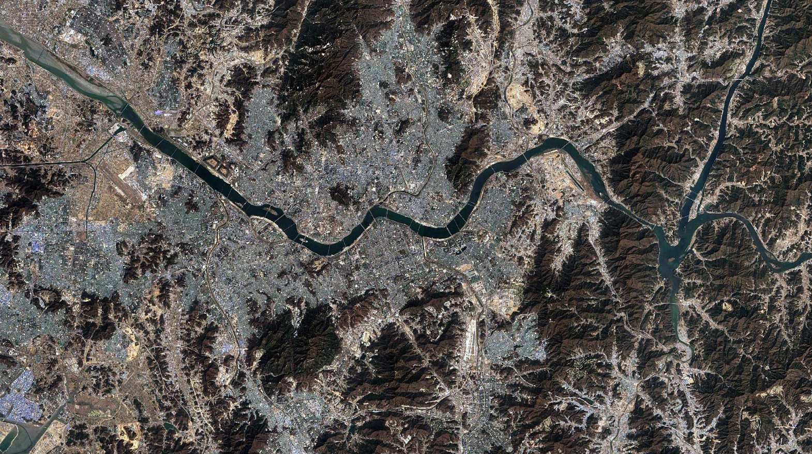
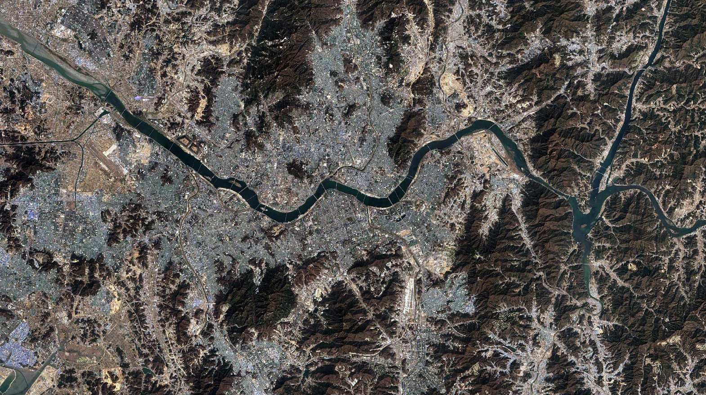

SEOUL
2023


 



The impact of viral social media trends on the urban alleyways

Much of Seoul has grown organically without centralized planning, resulting in a flexible urban fabric dominated by low rise, high-density residential blocks called villas. When these villas alleyways align with urban attractions, their adjacent alleys often transform into trendy hubs for young entrepreneurs, gaining popularity on Instagram. However, the viral trends in social media made its popularity very unpredictable.
Gyeonglidan-gil, the rise and fall of the commercial alleyways

Before and after the corridor gets popular in social media.
Social media, particularly Instagram, has played a pivotal role in the commercial development of Gyeonglidan-gil. Gyeonglidan-gil is the typical example that suffered from the viral trends of social media, sudden downfall in social media trends with gentrification almost led the entire alleyway out of business.
The system & the pain point
The stakeholders diagram shows the new players in the system of growing mechanics of urban alleyways. Uber Eats, DoorDash, Instagram, Google maps and its users.
br

there is a pain point in the reinforcing feedback loop of the viral social media. As the place gets popular exponentially, excessive people join the competition, which leads to expensive rents. The system collapses when the social media trends drop down.
Predictive Model for the popularity of alleyways
Here I tried to solve the pain point by making a predictive model for the popularity of alleyways based on the social media trends of Gyeonglidan-gil. which will give foremost warning signs to potential business owners when there is too much competition.
Scroll to continue
▼